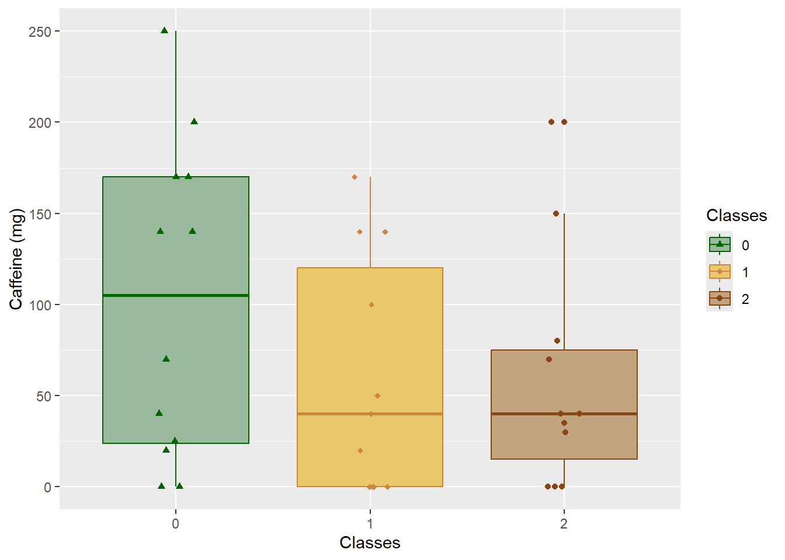
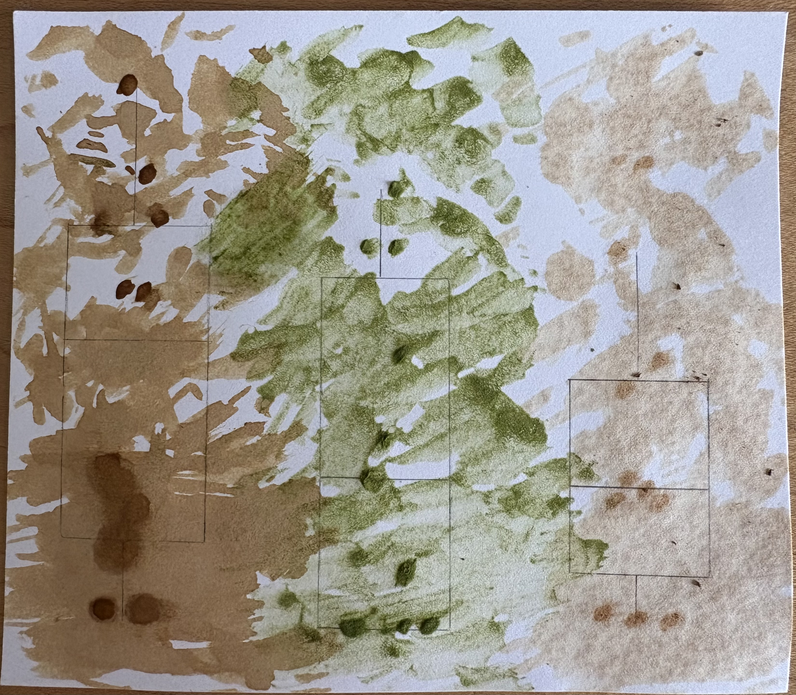

library(tidyverse)
library(here)
library(gt)
library(janitor)
library(readxl)
library(dplyr)
mydata <- read_csv("../data/ENVS-193DS_caffeine_hw2.csv")homework
https://github.com/kai-s-suzuki/ENVS-193DS_homework-03
Problem 1. Personal Data
a.
I could calculate the mean caffeine consumed (mg) each day to compare how much caffeine is consumed between days with 0, 1, and 2 classes. Since I feel like I get more work done on days without classes and I have less commitments to prevent me from preparing or buying a caffeinated drink, it would make sense to compare means.
b.
# data wrangling
mydata_clean <- mydata |> # start mydata dataset
filter(Classes %in% c("0", "1", "2")) |> # filter for 0, 1, or 2 classes
mutate(Classes = as_factor(Classes)) |> # make sure classes (numerical) are being read in as a factor
select(Classes, `Caffeine (mg)`, Ounces) |> # select columns of interest
rename(caffeine_mg = `Caffeine (mg)`) # renaming caffeine column for ease# plot creation
ggplot(data = mydata_clean, # using the clean dataset
aes(x = Classes, # setting x axis as classes
y = caffeine_mg, # setting y axis as caffeine in mg
color = Classes, # coloring by classes, so 0/1/2 have their own colors
shape = Classes, # making sure 0/1/2 have their own shapes
fill = Classes)) +
geom_boxplot() + # making boxplots
geom_jitter(height = 0, # making sure the points don't move vertically
width = 0.1) + # limiting how much the points move horizontally
labs(y = "Caffeine (mg)") + # relabeling the y-axis
theme_get() + # changing the theme
scale_color_manual(values = c("0" = "darkgreen", # manually coloring 0, 1, and 2
"1" = "tan3",
"2" = "chocolate4")) +
scale_shape_manual(values = c("0" = 17, "1" = 18, "2" = 19)) + # making data points different shapes
scale_fill_manual(values = c("0" = "#99b99d",
"1" = "#e9c76b",
"2" = "#c2a47e"))
mydata_summary <- mydata_clean |> # starting with the clean data frame
group_by(Classes) |> # grouping by Classes
summarize(mean = mean(caffeine_mg), # calculating the mean
n = length(caffeine_mg), # counting the number of observations
df = n - 1, # calculating the degrees of freedom
sd = sd(caffeine_mg), # calculating the sd
se = sd/sqrt(n), # calculating the se
tval = qt(p = 0.05/2, df = df, lower.tail = FALSE), # calculating the t-value
ci_lower = mean - tval*se, # calculate the lower bound of the 95% CI
ci_higher = mean + tval*se # calculate the upper bound of the 95% CI)
)
mydata_summary # displaying the data table# A tibble: 3 × 9
Classes mean n df sd se tval ci_lower ci_higher
<fct> <dbl> <int> <dbl> <dbl> <dbl> <dbl> <dbl> <dbl>
1 0 102. 12 11 86.3 24.9 2.20 47.2 157.
2 1 60 11 10 65.6 19.8 2.23 15.9 104.
3 2 58.6 11 10 64.3 19.4 2.23 15.5 102.c.
Caption: Caffeine consumption in mg is displayed by the number of classes attended each day. Days with zero classes had the highest mean caffeine consumption of about 102.1, while days with 1 or 2 classes had lower means of 60.0 and 58.6, respectively.
d.
mydata_summary |> # starting with the mydata_summary data frame
select(Classes, mean, sd, se, ci_lower, ci_higher) |> # selecting only Classes, mean, sd, se, ci_lower, and ci_higher to be displayed
gt() |> # using gt to make a table
gt::cols_label("ci_lower" = "Lower Bound", # relabeling ci_lower to say Lower Bound
"ci_higher" = "Upper Bound", # relabeling ci_higher to say Upper Bound
"mean" = "Mean", # relabeling mean to say Mean
"sd" = "Standard Deviation", # relabeling sd to say Standard Deviation
"se" = "Standard Error") |> # relabeling se to say Standard Error
fmt_number( # formatting numbers
columns = everything(), # applying to all columns
decimals = 1) # rounding to one decimal place| Classes | Mean | Standard Deviation | Standard Error | Lower Bound | Upper Bound |
|---|---|---|---|---|---|
| 0 | 102.1 | 86.3 | 24.9 | 47.2 | 156.9 |
| 1 | 60.0 | 65.6 | 19.8 | 15.9 | 104.1 |
| 2 | 58.6 | 64.3 | 19.4 | 15.5 | 101.8 |
Problem 2.
a.
An affective visualization for my personal data would likely include the psychological effects of caffeine, such as the energy rush and crash. It might also incorporate how days with more classes can be busier and hectic. Caffeine can definitely affect our emotions, and that should be the main component of an affective art piece.
b.

c.

d.
I am showing the psychological effects of caffeine. For example, the areas that are higher in the image–representing higher caffeine consumption–has space filled efficiently and quickly.
I love how watercolor looks when representing natural landscapes and colors. My former internship supervisor, Kelly Hildner, makes watercolor paintings that use earthy tones.
This piece was made with natural pigments (instant coffee, matcha powder, black tea) concentrated in water.
A sketch of the art was made with conceptual ideas before the draft. The original data visualization serves as a base where the increasing y-axis was reflected in the art.
Problem 3.
a.
The paper I chose for my critique uses a linear model, with nest abundance as the response variable and year as the predictor variable.

b.
The x- and y-axes are in logical positions, as time should be on the x-axis and the response variable to time should be on the y-axis. They display underlying data, showing the raw data on the graph and overlaying the line and confidence intervals. ‘Simple’ statistics, like means and standard errors, are not displayed, possibly due to their use of the global linear model and the natural log of nesting sites, rather than the raw number.
c.
The authors handled visual clutter well. They removed grid lines, chose a different color for the line, and made the axes labels clear and legible. ‘Year’ and ‘Ln(Nests)’ are bolded to draw attention to the timeframes, which are not the same for all four figures, and to the values, which have different scales.
d.
To improve this figure, adding the r-values that indicate the degree of nesting trends could be useful. While it appears that ‘Bluff’ and ‘Larga’ have falling trends, and ‘Soropta’ has a rising trend, it might be useful in certain situations to see statistics quickly without further reading. This is especially apparent when the natural log may distort the true change in nests. Another improvement could be to include the overarching trend in each figure. By overlaying the aggregate of the four Panamanian beaches, the trend for each individual beach can be compared with the others. Adding all four models onto one graph would not be ideal, as this would be too much visual clutter.